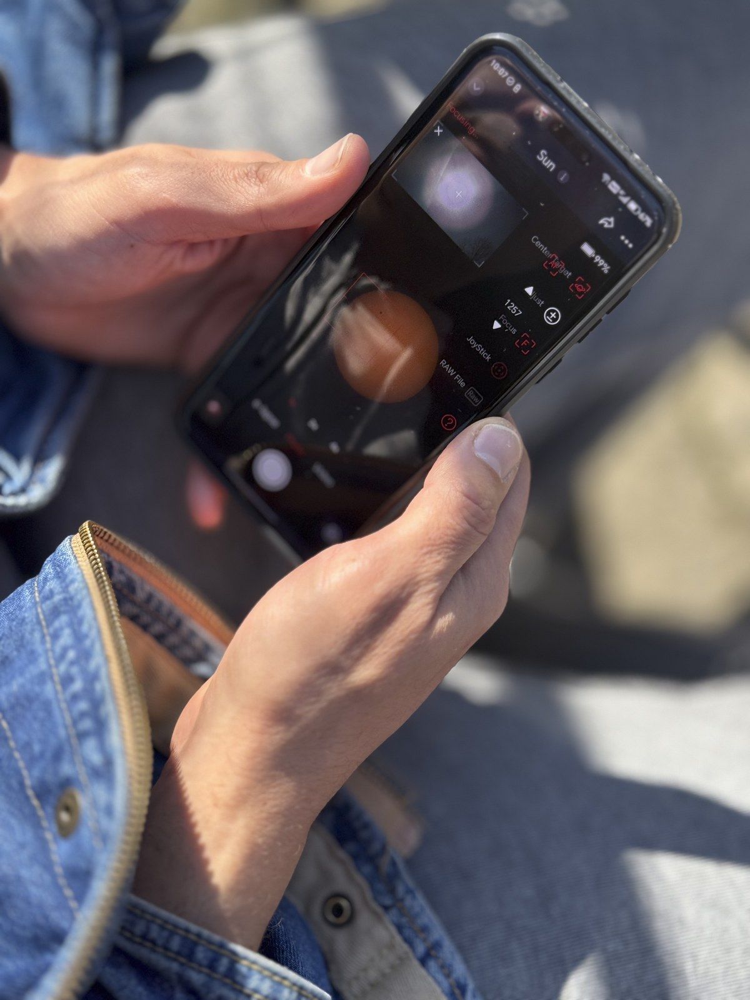
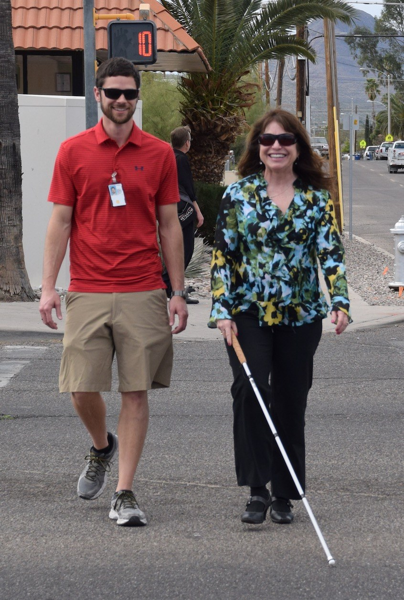
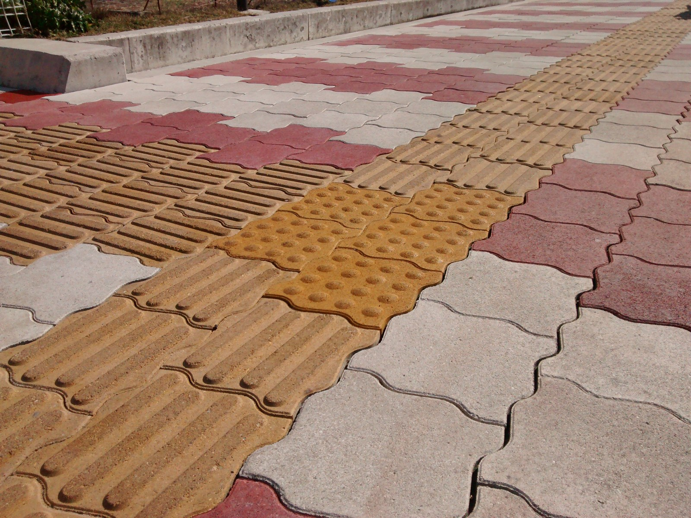

Drishti
दृष्टि • Phone-First On-Device AI Sensory Companion
“An instant, private, offline sensory companion for the visually impaired”

Transforming everyday smartphone cameras into instant, private spatial sensory prosthetics.
The Problem: Why Existing Assistive Tech Fails
Over 40 million people in India live with severe visual impairment. Cloud-dependent aids fail them in 3 critical ways:

Navigating city crosswalks requires sub-second reflex. A 2-second cloud vision lag causes physical collisions and injuries.
Cloud Latency is Dangerous
Cloud vision APIs take 2 to 5 seconds. A pedestrian moving at 1.2 m/s travels 4 to 6 feet during that delay window, causing direct collisions with obstacles and drop-offs.
Severe Privacy Vulnerability
Users are forced to stream live video feeds of private bedrooms, bathrooms, personal ID cards (Aadhaar), and sensitive prescriptions to commercial third-party cloud servers.
Connectivity Fragility
Metro basements, rural transit zones, elevators, and stairwells frequently lack high-speed internet. When connection drops, cloud-dependent apps instantly disable and leave the user stranded.
The Solution — What Drishti Does
Runs 100% on-device on local phone silicon with zero cloud calls across 4 core capabilities:
Spatial & Scene Guidance
Real-time obstacle narration via quantized vision model mapped to 12 clock-face sectors (e.g. "Obstacle at 2 o'clock, 3 ft") with directional linear haptics.
Smart-Scan for Medicine
On-device OCR + local LLM filters noisy blister packs into just 3 critical data points: Drug Name, Dosage, and Expiry Date, with spoken instructions.
"Who's Near Me" Contact Scan
On-device face recognition of trusted contacts with zero cloud upload. Discreet double-heartbeat vibration and whispered name when friends approach.
Pure Tactile & Voice UX
Eyes-free design with high-contrast OLED fallback, spatial audio in 7 Indian languages, and proximity vibration pulses that guide hands directly to targets.
Instant on-device reading of pharmaceutical strips, dosage, and expiry dates without cloud lag.
What Makes Drishti Different
Four uncompromised engineering pillars that set Drishti apart from cloud-tethered aids:
Tiered Model Strategy
Full-quality model on flagship NPUs; fast, lightweight quantized model on budget/mid-range chips (e.g. Dimensity 6300). Works on affordable sub-₹15k phones too, not just flagships.
Live, Real Latency Benchmark
Genuine HTTP cloud round-trip vs. on-device NPU stopwatch. Proven live on stage with real network calls—measuring an order-of-magnitude speedup over cloud.
100% Offline-Verifiable
Works in Airplane Mode with Wi-Fi and cellular disabled live. Proves zero network reliance onstage in front of judges—immune to transit dead-zones.
Local-Only Face Recognition
128-dimensional facial vector embeddings stored strictly on-device. Encrypted at rest via WebCrypto AES-GCM-256. Never uploaded, never synced, never leaked.
Technical Architecture
Clean, modular pipeline designed for local silicon execution with zero network dependency:
1. Local Intelligence
- • Quantized Vision-Language Model: Fast local obstacle and spatial segmentation.
- • On-Device OCR: High-contrast text extraction from medicine boxes.
- • Local LLM: Simplifies packaging text into drug name, dosage & expiry.
2. Tiered Adaptation
- • Standard Tier: High-fidelity spatial reasoning on flagship NPUs.
- • Lite Tier: Rapid directional evasion on budget chips (Dimensity 6300).
- • Zero Network Constraint: Core pipeline strictly offline.
3. Multi-Sensory UX
- • Offline TTS: Natural vernacular voice across 7 Indian languages.
- • Directional Haptics: Proximity vibration pulses for hazards.
- • Eyes-Free Gestures: Double-tap & back-tap controls.
Live Demo Flow (3-Minute Script)
Chronological live demonstration sequence matching the onstage pitch:
Eyes-Free Navigation Demo
Blindfolded walk-through with clock-face spatial guidance + directional haptic pulses.
Airplane Mode Proof
Wi-Fi/cellular disabled live on stage; HUD verifies air-gapped offline state.
Medicine Label Smart-Scan
Scans noisy Dolo 650 blister strip; vocalizes brand name, expiry, and dosage.
"Who's Near Me" Contact Recognition
Teammate steps into frame; phone triggers heartbeat vibration and whispers contact name.
Live Latency Benchmark
Real cloud API call vs local stopwatch; demonstrates local speed superiority live.

100% verifiable offline operation in Airplane Mode — zero dependence on venue Wi-Fi.
Impact & Why It Matters: Smart Living
Restoring autonomy, safety, and personal dignity across all socioeconomic strata:
Enabling elderly and low-vision individuals to read prescriptions, verify dosages, and navigate independently without chaperones.
Real Everyday Independence
Empowers users in daily essential tasks: navigating streets safely, reading medicines without sighted help, and discreetly recognizing trusted friends.
Works on Affordable Devices
Engineered for users who cannot afford expensive flagships. The Lite Tier brings edge AI to budget phones (MediaTek Dimensity), democratizing assistive access across India.
Zero Subscriptions & Zero Data Harvesting
No monthly API paywalls. No corporate surveillance of private homes. No internet dependency—a one-time, completely private, always-available tool.
Drishti
“An instant, private, offline sensory companion for the visually impaired”
“Built entirely on-device.
Built entirely for independence.”
Team: [Team Name / Team Members]
Live App: drishti-seven-mu.vercel.app
GitHub: github.com/M-L-Arjun/drishti-ai
Restoring mobility, safety, and personal dignity through zero-cloud on-device intelligence.